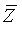
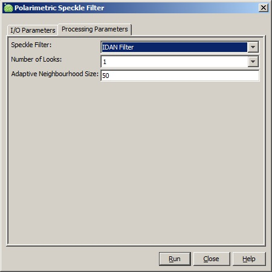
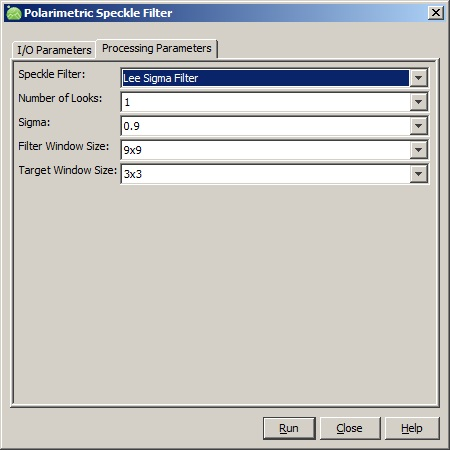

| Polarimetric Speckle Filter | |
SAR images have inherent salt and pepper like texturing called ‘speckle’ which degrades the quality of the image and makes interpretation of features more difficult. The presence of speckle intensity fluctuations in single-look complex SAR imagery is an inevitable consequence of the nature of coherent image formation. Each radar resolution cell contains multiple individual scatters, each of which contributes to the overall signal returned from the resolution cell. Since the radar wavelength is normally much smaller than the size of the resolution cell, the phase obtained from each individual scatterer is effectively random. The signals from each scatter may be summed according to the principle of superposition, which results in constructive and destructive interference. Cells where destructive interference dominates will appear to have a low reflectivity, while cells where constructive interference dominates will appear to have a high reflectivity. This leads to the phenomenon of speckle. It may be shown thatthe speckle intensity is exponentiallydistributed.
While the presence of speckle in a SAR image can impair qualitative interpretation of the image, speckle is even more problematic when interpreting SAR data in a quantitative manner. In particular, the reliability of image segmentation techniques is adversely-effected by the presence of speckle.
For polarimetric SAR data, the speckle filtering is based on incoherent averaging and requires handling statistical second order representations. Thus the speckle filtering is applied to covariance or coherency matrix.
This operator provides the following polarimetric speckle filterings:
The box car filter is a direct application of the incoherent averaging of the covariance/coherency matrix over pixels in a neighborhood defined by a sliding window. The boxcar filter presents the best filtering performance over homogeneous areas. However there are two major drawbacks with the box car filter:
The refine Lee filter is a minimum mean square error (MMSE) filter and was developed based on the multiplicative noise model. One major deficiency with the MMSE filter is that speckle noise near strong edges is not adequately filtered. To compensate this problem, the refined Lee filter uses a nonsquare window to match the direction of edges. The filter operated in a 7x7 (or 9x9, 11x11) sliding window. One of eight edge-aligned windows is selected to filter the center pixel. Only the pixels in the non-edge area in the edge-aligned window are used in the filtering computation.
The filter follows three major processing steps as given below:

where

is the local mean of matrices computed with pixels in the same edge-directed window.
Conventional filtering method selects pixels from homogeneous areas
in a fixed size sliding window. The drawback with this approach
is that the number of pixels selected may not be sufficient to reduce
the estimation variance. Instead of limiting the pixel
selection in a fixed size window, the IDAN (Intensity-Driven
Adaptive-Neighborhood) filter selects pixels with region growing
techniques and criteria of the Lee sigma filter. In this algorithm, an
adaptive neighborhood is determined for each pixel by a region growing
technique. The pixel is then filtered with the MMSE filter computed
using all selected pixels. The region growing technique consists of two
stages:
The Lee Sigma filter proposed in [4] assumes Gaussian noise
distribution and filters the center pixel in a sliding window with the
average of pixels within the two-sigma range. One major drawback of the
algorithm is that the mean of pixels within the two-sigma range is
always underestimated due to the fact that the noise distributions are
not symmetric and the symmetric thresholds are used in the pixel
selection. The new Lee Sigma filter [3] extends and improves the Lee
Sigma filter in the following aspects:

For refined Lee filter, the following parameters are needed (see Figure 3):

Figure 3. Dialog box for IDAN Speckle Filter
For Lee Sigma filter, the following parameters are needed (see Figure 4):

Figure 4. Dialog box for Lee Sigma Speckle Filter
Reference:
[1] Jong-Sen Lee and Eric Pottier, Polarimetric Radar Imaging: From Basics to Applications, CRC Press, 2009
[2] G. Vasile, E. Trouve, J.S. Lee and V. Buzuloiu, "Intensity-Driven Adaptive-Neighborhood Technique for Polarimetric and Interferometric SAR Parameters Estimation", IEEE Transaction on Geoscience and Remote Sensing, Vol. 44, No. 6, June 2006.
[3] J.S. Lee, J.H. Wen, T.L. Ainsworth, K.S. Chen and A.J. Chen, "Improved Sigma Filter for Speckle Filtering of SAR Imagery", IEEE TRansaction on Geoscience and Remote Sensing, Vol. 47, No. 1, Jan. 2009.
[4] J.S. Lee, “Digital image smoothing and the sigma filter,”
Comput. Vis. Graph. Image Process., vol. 24, no. 2, pp. 255–269, Nov.
1983.